Module 1: Classification & Diagnostic Approach
DiagnosisChronic B-cell Disorders with Leukaemic Expression
- CLL / SLL / MBL — the CLL spectrum
- SMZL — Splenic marginal zone lymphoma
- HCL — Hairy-cell leukaemia
- Splenic B-cell lymphoma/leukaemia with prominent nucleoli (historically HCL variant)
- Non-nodal leukaemic MCL — Mantle cell lymphoma
- LPL / WM — Lymphoplasmacytic lymphoma / Waldenström
- SDRPL — Splenic diffuse red pulp small B-cell lymphoma
Diagnostic Sequence
Diagnostic Marker Comparison Table
| Disorder | CD5 | CD23 | CD200 | CD103 | CD123 | Cyclin D1 | MYD88 | BRAF V600E |
|---|---|---|---|---|---|---|---|---|
| CLL | + | + | + | − | − | − | ± | − |
| SMZL | − | − | − | − | − | − | − | − |
| HCL | − | − | − | + | + | weak | − | + |
| Non-nodal MCL | + | − | − | − | − | + | − | − |
| LPL/WM | ± | − | − | − | − | − | + (L265P) | − |
| SBCL-PN | − | − | − | ± | + | − | − | − |
| SDRPL | − | − | − | − | − | − | − | − |
CLL Diagnostic Algorithm
Blood🩸Doctor · Dr Abdul Mannan FRCPath FCPSReactive / Transient
Investigate other causes (infection, autoimmune, stress)
(CD5, CD19, CD20, CD23, CD200, SmIg, FMC7)
SMZL, HCL, MCL, LPL/WM
CD103, BRAF V600E, Cyclin D1, MYD88 L265P, Annexin A1
Module 2: CLL Core Concepts
CoreDefinition & CLL-SLL Continuum
- CLL: ≥5×109/L monoclonal B cells in blood for ≥3 months with typical immunophenotype (SmIgweak, CD5+, CD19+, CD20weak, CD23+, CD200+)
- SLL: tissue-dominant disease (same phenotype) with blood B cells <5×109/L
- MBL: <5×109/L clonal B cells, no adenopathy/organomegaly/symptoms
- ~90% present as CLL, ~10% as SLL
Epidemiology & Clinical Features
- Most frequent leukaemia in Western countries (~34% of all leukaemias)
- M:F ratio 1.5–2:1; median age at diagnosis ~70 years
- ~80% diagnosed while asymptomatic (incidental finding)
- Painless generalised lymphadenopathy (neck, axillae, inguinal)
- Familial risk: 3–8x higher in first-degree relatives
- Rare in Asian populations; remains rare in migrant populations
Immune Dysfunction Profile
- Hypogammaglobulinaemia: affects ~25%, IgM falls first, then IgG, then IgA
- T-cell exhaustion: inverted CD4/CD8 ratio, increased PD-1/LAG-3/CTLA-4
- NK cell / ADCC defects
- Monocyte and granulocyte dysfunction
- Suboptimal vaccination responses
Laboratory Hallmarks
- Elevated WBC with absolute lymphocytosis
- Small mature lymphocytes with scanty cytoplasm
- Smudge cells (Gumprecht cells) on blood film
- Prolymphocytes 1–10% nearly always present when WBC >30×109/L
- Prolymphocytes >15% = accelerated/transforming CLL
Module 3: Molecular & Cytogenetics Simplified
High PriorityIGHV Mutated vs Unmutated
Two biologic behaviours in one disease. Mutated IGHV (<98% germline homology) = post-germinal centre origin, indolent biology, longer treatment-free interval, median survival >15 years. Unmutated IGHV = pre-GC origin, aggressive kinetics, shorter survival (6–7 years historically).
del(13q) Isolated
Generally favourable biology. Present in 25–40% of cases. Associated with mutated IGHV, MYD88 mutations, miR-15a/miR-16 involvement. Median survival >15 years when found as sole abnormality.
del(11q) / ATM
Higher-risk profile in CIT era. Present in 20–25%. Associated with unmutated IGHV, ATM mutations (30%), BIRC3 mutations. Historically shorter treatment-free survival. BCRi/BCL2i overcome poor prognostic significance.
del(17p) / TP53
Poor CIT response; pathway inhibitor preference. Present in 5–50% depending on disease stage. Usually accompanied by TP53 mutation on other allele. The most important predictor of CIT resistance. Must use BTKi or BCL2i. Median survival 3–6 years with CIT.
Complex Karyotype
Risk escalation marker. Defined as >3 or >5 aberrations. Found in 5–30%. Often includes TP53 mutations. Associated with clonal evolution and poorer outcomes even with targeted therapy.
BCR Signalling & Apoptosis Escape
Why BTKi and BCL2i work. CLL cells depend on BCR signalling for survival and proliferation → BTK inhibitors block this pathway. CLL cells overexpress BCL2 (antiapoptotic) → venetoclax directly triggers apoptosis. This explains the class-switch strategy in relapsed disease.
Cytogenetic Correlation Table (Table 23.3)
| Abnormality | Frequency | Biological | Clinical | Median Survival |
|---|---|---|---|---|
| del(13q14) isolated | 25–40% | Mutated IGHV, MYD88, miR15/16 | Good prognosis | >15 years |
| Trisomy 12 | 15–20% | Unmutated IGHV, NOTCH1, atypical morphology | Short treatment-free survival after CIT | ~10 years |
| del(11q22-23) | 20–25% | Unmutated IGHV, ATM/BIRC3 mutations | Short TFS; BCRi/BCL2i overcome | 6–8 years |
| del(17p13.1) | 5–50% | Unmutated IGHV, TP53, complex karyotype | CIT resistance; use pathway inhibitors | 3–6 years |
Module 4: Prognosis & Risk Stratification
PrognosisRai Staging
| Stage | Features | Risk | Median Survival |
|---|---|---|---|
| 0 | Lymphocytosis only | Low | >15 years |
| I | + Lymphadenopathy | Intermediate | ~10 years |
| II | + Spleen/liver enlargement | Intermediate | 7–9 years |
| III | + Anaemia (Hb <110 g/L) | High | 3–5 years |
| IV | + Thrombocytopenia (<100×109/L) | High | 3–5 years |
Binet Staging
| Stage | Features | Median Survival |
|---|---|---|
| A | <3 lymphoid areas enlarged | >15 years |
| B | ≥3 lymphoid areas enlarged | 7–9 years |
| C | Hb <110 g/L and/or platelets <100×109/L | 3–5 years |
Good-Risk Pattern
- Early stage (Binet A, Rai 0)
- Mutated IGHV
- Isolated del(13q)
- Normal beta-2 microglobulin
- Low blood lymphocyte count (<15×109/L)
- Long LDT (>12 months)
High-Risk Pattern
- Advanced stage (Binet B/C, Rai I–IV)
- Unmutated IGHV
- del(17p)/TP53, del(11q), complex karyotype
- Elevated beta-2 microglobulin
- High blood lymphocyte count (≥15×109/L)
- Short LDT (<12 months)
Module 5: Treatment Strategy
TreatmentWhen NOT to Treat: Active Surveillance
Asymptomatic early-stage CLL (Binet A, Rai 0) without active disease features should be observed with periodic monitoring. Early treatment has NOT shown survival benefit.
Treatment Initiation Criteria
- Hb <110 g/L from marrow failure
- Platelets <100×109/L from marrow failure
- Massive (≥6 cm below costal margin) or progressive splenomegaly
- Massive (≥10 cm) or progressive lymphadenopathy
- Progressive lymphocytosis (>50% increase in 2 months or LDT <6 months)
- Constitutional symptoms (B symptoms)
- Refractory autoimmune cytopenia
CLL Treatment Decision Algorithm
Blood🩸Doctor · Dr Abdul Mannan FRCPath FCPSCriteria Met?
FBC, clinical exam, LDT
Disrupted?
(2nd-gen preferred over ibrutinib)
(curative potential in this subset)
over CIT in unmutated IGHV
Prior Therapy?
Pirtobrutinib (non-covalent BTKi)
Key Drug Profiles
| Agent | Class | Key Points |
|---|---|---|
| Ibrutinib | BTKi (1st gen) | Continuous therapy; AF, hypertension, bleeding risk |
| Acalabrutinib/Zanubrutinib | BTKi (2nd gen) | More selective; lower cardiac toxicity |
| Venetoclax | BCL2i | Fixed-duration with anti-CD20; TLS risk → dose ramp-up required |
| FCR | CIT | Selected fit young patients with mutated IGHV, no TP53; curative potential in subset |
Module 6: Complications & Supportive Care
ComplicationsAutoimmune Cytopenias
- AIHA: ~10% of CLL patients; elevated LDH, low haptoglobin, positive DAT (IgG/C3)
- ITP: 5–7%; isolated thrombocytopenia with preserved marrow megakaryocytes
- Evans syndrome: concurrent AIHA + ITP
- PRCA: <1%; low reticulocytes, arrested red cell precursors
- Treatment: corticosteroids first → rituximab → alternative immunosuppression → anti-CLL therapy if refractory
Infection Risk & Vaccination
- Infections are the commonest cause of death (40–60%)
- Multifactorial: low IgG, impaired antigen presentation, treatment toxicity
- IgG replacement for profound hypogammaglobulinaemia + recurrent infections
- Screen ALL patients for hepatitis B before anti-CD20 therapy
- Vaccination: inactivated influenza, pneumococcal, herpes zoster — response is suboptimal but still recommended
Richter Transformation
- Occurs in ~5% of patients; transformation to DLBCL (most common) or Hodgkin lymphoma
- Clonally related (80%): poor prognosis, median survival <1 year; consider allo-HSCT
- Clonally unrelated (20%): prognosis like de novo DLBCL; treat with R-CHOP
- Associated with: unmutated IGHV, NOTCH1, TP53, CDKN2A/B, MYC mutations
- PET/CT helps target biopsy to metabolically active sites
Second Neoplasias
- 10–15% of CLL patients develop other cancers
- Melanoma, lung carcinoma, lymphoma, GI tumours most frequent
- Substantially increased risk of Merkel cell carcinoma
- Secondary MDS/AML in ~5% of heavily pre-treated patients (e.g., post-FCR)
Richter Transformation Workup Algorithm
Blood🩸Doctor · Dr Abdul Mannan FRCPath FCPSIdentify most metabolically active site (SUVmax often >5)
Core/excisional biopsy from hottest node
R-CHOP/R-EPOCH → allo-HSCT if eligible
Consider clinical trials, checkpoint inhibitors
Standard R-CHOP (± HSCT)
Much better outcomes
Module 7: Other Chronic B-cell Disorders
DifferentialSMZL — Splenic Marginal Zone Lymphoma
- Villous lymphocytes on blood film
- Splenomegaly (often massive)
- Intrasinusoidal marrow infiltration pattern
- CD11c+, CD103−, CD5−, CD23−
- NOTCH2 mutations; no BRAF V600E
- Treatment: rituximab-based; splenectomy in selected cases
HCL — Hairy-Cell Leukaemia
- Pancytopenia with monocytopenia (hallmark)
- Hairy projections on lymphocytes
- CD103+, CD123+, CD25+, CD11c+, Annexin A1+
- BRAF V600E in virtually all cases
- Bone marrow: clear-zone infiltration, often dry tap
- Treatment: purine analogues (cladribine/pentostatin) → high durable remissions
- Relapsed: vemurafenib + rituximab
Non-nodal Leukaemic MCL
- Cyclin D1+, t(11;14)(q13;q32) — key discriminator from CLL
- SOX11−, CD200+ (unlike nodal MCL)
- Can mimic CLL morphologically
- Generally more indolent than nodal MCL but requires different management
Splenic B-cell Lymphoma with Prominent Nucleoli (HCL Variant)
- CD25−, no BRAF V600E (key differences from classical HCL)
- CD123+, Annexin A1−
- MAP2K1 mutations common
- Does NOT respond well to purine analogues alone
- Splenectomy may be considered
SDRPL
- Splenic diffuse red pulp small B-cell lymphoma
- Rare; involves splenic red pulp diffusely
- CD5−, CD23−, Annexin A1−
- CCND3 mutations described
Follicular Lymphoma (Leukaemic Phase)
- CD10+, BCL6+, t(14;18)(q32;q21)
- Cleaved nuclei (centrocytes) on blood film
- CD5−, CD23− or weak
- Paratrabecular marrow infiltration (unlike CLL)
Module 8: Figures & Visual Atlas
Visual GuideFig 1 — CLL Pathogenesis
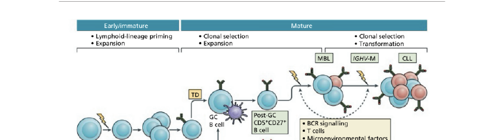CLL evolves stepwise from HSC genetic/epigenetic lesions through polyclonal B-cell expansion, oligoclonal selection, MBL, and finally overt CLL.
Fig 2 — Blood Film: Typical CLL
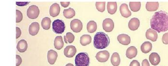Small mature lymphocytes with scanty cytoplasm and smudge cells (Gumprecht cells).
Fig 3 — Transforming CLL
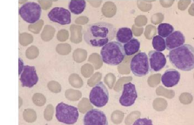Increased prolymphocytes (>15%) signals accelerated/transforming CLL. Dual population of small lymphocytes and larger nucleolated cells.
Fig 4 — Polyclonal B-cell Lymphocytosis
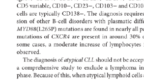Binucleated lymphocytes characteristic of persistent polyclonal B-cell lymphocytosis (a benign mimic).
Fig 5 — Richter Syndrome
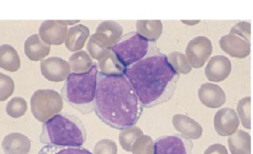Large blast-like atypical cells corresponding to Richter syndrome with blood involvement.
Fig 6 — Treatment Algorithm
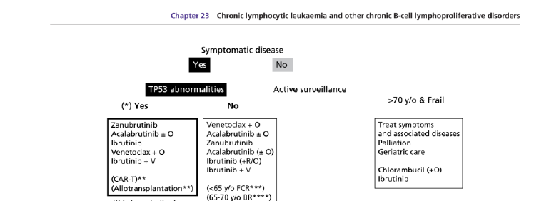Treatment pathway integrates disease activity criteria, biology (IGHV/TP53), and patient fitness.
Fig 6a — Rai/Binet Staging
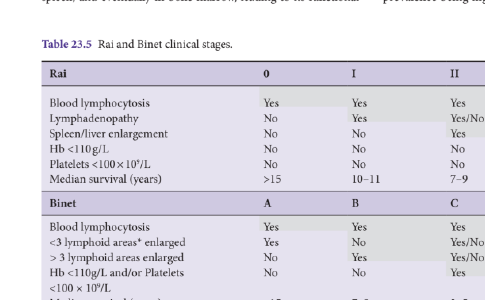Clinical staging systems for CLL prognosis and treatment planning.
Fig 7 — SMZL Blood Film
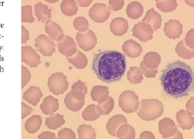Villous lymphocytes supporting SMZL pattern on blood film.
Fig 8 — Hairy Cell Leukaemia
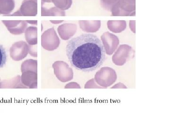Typical hairy cells with fine cytoplasmic projections supporting HCL diagnosis.
Fig 9 — BM Trephine in HCL
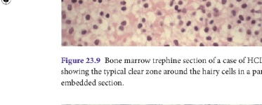Marrow trephine showing classic clear-zone (fried egg) infiltration pattern.
Fig 10 — BM Trephine HCL (Paraffin)
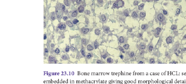Paraffin section reinforcing HCL diagnosis with diffuse marrow involvement.
Fig 11 — Mantle Cell Lymphoma
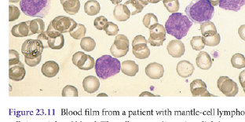Leukaemic MCL cells can mimic CLL morphologically but differ biologically (Cyclin D1+, t(11;14)).
Fig 12 — Follicular Lymphoma
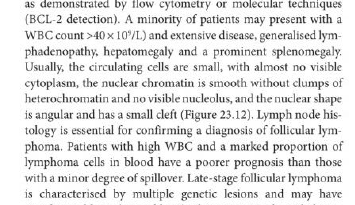Cleaved nuclei and centrocyte morphology supporting follicular lymphoma leukaemic spillover.
Fig 13 — HCL Variant
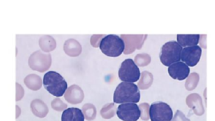Nucleolated villous cells suggesting splenic B-cell lymphoma/leukaemia with prominent nucleoli (HCL variant).
Quiz Zone
Bibliography & Abbreviations
ReferenceCore References
- Hallek M, Cheson BD, Catovsky D, et al. iwCLL guidelines for diagnosis, indications for treatment, response assessment, and supportive management of CLL. Blood. 2018;131:2745-2760.
- Eichhorst B, Robak T, Montserrat E, et al. Chronic lymphocytic leukaemia: ESMO Clinical Practice Guideline. Ann Oncol. 2021;32:23-33.
- Eichhorst B, et al. ESMO update for CLL (2024). Ann Oncol. 2024.
- Grever MR, Abdel-Wahab O, et al. Consensus guidelines for classic hairy cell leukemia. Blood. 2017;129:553-560.
- Montserrat E. Chapter 23: CLL and other chronic B-cell lymphoproliferative disorders. In: Hoffbrand's Postgraduate Haematology, 8th ed. Wiley; 2025.
Abbreviations
| AIHA | Autoimmune haemolytic anaemia |
| BCL2i | BCL2 inhibitor (e.g., venetoclax) |
| BCR | B-cell receptor |
| BTKi | Bruton tyrosine kinase inhibitor |
| CIT | Chemoimmunotherapy |
| CLL | Chronic lymphocytic leukaemia |
| DAT | Direct antiglobulin test |
| DLBCL | Diffuse large B-cell lymphoma |
| FCR | Fludarabine, cyclophosphamide, rituximab |
| FISH | Fluorescence in situ hybridisation |
| HCL | Hairy-cell leukaemia |
| IGHV | Immunoglobulin heavy-chain variable region |
| ITP | Immune thrombocytopenia |
| LDT | Lymphocyte doubling time |
| MBL | Monoclonal B-cell lymphocytosis |
| MCL | Mantle cell lymphoma |
| MRD | Minimal residual disease |
| PRCA | Pure red-cell aplasia |
| SLL | Small lymphocytic lymphoma |
| SMZL | Splenic marginal zone lymphoma |
| TP53 | Tumour protein p53 |
| uMRD | Undetectable minimal residual disease |